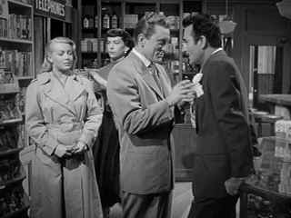

|
Bad and the Beautiful/ A,
B+ |
|
MGM/1952/119/FS 1.33/BW |
Every time I
watch this quintessential Hollywood film, I marvel at the perfection of its
construction. A film about Hollywood with a fierce bite made by a major
studio and directed and acted by established icons of the screen. This is
not an overtly satiric work and what missiles it fires off are not aimed at
the big studios but at the renegade small fry looking to succeed at any
cost, ruthlessly mining friendships for art or is it for anything for
success.
The Bad and the Beautiful is remarkable for the
way it defines relationships. The producer has never been given a better
shot at screen immortality than in the portrait of Jonathan Shields. Each
segment of the film examines the relationship of the producer to a key
member of the filmmaking team. We learn what a special producer can bring in
a close relationship to a director as Shields and Fred Amiel play out that
segment of the film. Georgia Lorrison is a self pitying drunk when Shields’
producer second sight reveals a movie star below all the layers of self
doubt. And for James Lee Bartlow, Shields literally teaches the writer the
art of screenwriting and takes him from the loneliness of novelist and
typewriter to the art of collaboration. What drives Shields ultimately
destroys these foundation relationships.
|
 |
| Jonathan
the starmaker. ©Warner |
Vincente
Minnelli directs The Bad and the Beautiful at the peak of his powers.
Given an Academy Award winning screenplay from Charles Schnee, Minnelli can
concentrate on constructing picture perfect shots. He captures the feel of
a Hollywood set with eloquent evocations of the grace of the big camera on a
dolly or a boom. The structure of the screenplay is classic flashback used
to perfection. The polished images of cinematographer Robert Surtees was
recognized by the Academy Awards for black and white photography.
Sterling performances are a hallmark of The Bad and the
Beautiful. Kirk Douglas brings his usual incredible energy mixed with an
unpredictable brooding to the role of film producer Jonathan Shields. The
magic of the Douglas performance adds an irresistible appeal to the heal
Shields. What drives Shields? Is it ambition? Is it art? Is it the painful
shadow of his long dead producer father? Opposite Douglas and probably
giving her finest screen performance is Lana Turner playing movie star
Georgia Lorrison. Not only does Turner command the screen with beauty and
sensuality, in her most powerful scenes with Douglas her acting is
outstanding. Dick Powell is wonderfully sardonic in the role of writer
James Lee Bartlow and Barry Sullivan has an easy appeal as steady director
Fred Amiel. The supporting actors are splendid starting with Walter Pidgeon
giving producer Harry Pebbel more than his share of dignity, Gloria Grahame
sashaying as a Southern belle in an Academy Award winning role and Gilbert
Roland smoothly commanding the dance floor as “Latin lover” Goucho.
It's about time The Bad and the Beautiful
made its beautiful black and white presence felt on DVD. The transfer from
Warner is very nice indeed. Contrast ratio is excellent, delivering the
glossy images with deep blacks. Source material is very clean save for some
specs of dirt that do not intrude on the beauty of the images. Nice gray
scale range is consisting delivered. High key lighting is properly dramatic
and shadow detail is in perfect balance. There's very slight noise level
below the dialogue and music on the mono sound track, but it's just short of
annoyance. David Raksin's hauntingly beautiful score sounds properly lush.
The two sided special edition features a Turner made cable
biography of actress Lana Turner. It's an interesting accompaniment to the
feature, though it doesn't break any new documentary ground.
Reviewed on a Sharp 9000VX DLP Projector
|
|
|
|

Selections from the
Feature Archive include articles on
Akira Kurosawa,
Blonde
Bimbos,
Frank
Darabont,
Steven Culp,
John Herzfeld or
Vietnam:
The Hollywood Pariah, and many more....
The Bitch Brigade

A line-up of lean-lipped actresses who marched through Hollywood in a
high heeled goose step armed with razor sharp dialogue. Click on the image
to read all about them.


A Star is Born/A,B

Judy Garland is brilliant in the great Hollywood tale of one star on the
rise and another sliding into the abyss. James Mason is wonderful alongside
Judy.

The Movie Poster Archive
includes extensive poster images from the films of stars like Susan Hayward,
Kirk Douglas, Katharine Hepburn and many more. Our featured star is
Lana
Turner.

 Have you visited
Home Theater Talk lately? One of
the friendliest places on the Net for Home Theater and DVD discussion, you
can get help for installation problems or simply share your opinions with
other Vidiots. Have you visited
Home Theater Talk lately? One of
the friendliest places on the Net for Home Theater and DVD discussion, you
can get help for installation problems or simply share your opinions with
other Vidiots.

Mystery writer Fred Hunter digs into classic films on DVD. Check out his
insightful reviews at The Classics on
DVD.

Images is a non-commercial Web site created for everyone who enjoys movies
and popular culture. Images is published quarterly; however, new reviews
will appear each week, so check back often.

Agoraquest is offering reviews, forums, news, and more dedicated to Sony
products including, televisions, cameras, audio, DVD, and more.
|